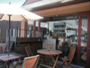
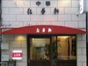
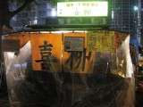
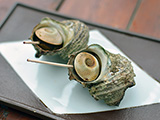
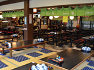

体験プログラムを探そう！
全てを表示- 2階建てバスに乗って福岡街めぐり 2012年春より運行された「福岡オープントップバス」にチケット１枚で乗車できます。予約時に下... 福岡オープントップバス 福岡市中央区
-  月替わりKURUMIカレー＋デザートセット 今泉の「季離宮」内にあり、ゆっくりとした時間を過ごせるカフェ。月替わりのKURUMIカレー・... Kurumi 福岡市中央区
-  皿うどん＋スーパイコ 「福岡一おいしい！」とＴＶでも紹介された特製皿うどんと、名物スーパイコをセットにした特別セッ... 紅蓉軒 福岡市中央区
- アビスパ福岡 公式試合観戦（ホームB自由席） 福岡を本拠地とする「アビスパ福岡」の公式試合をお得に楽しめます。ゲーム日程・時間はホームペー... レベルファイブスタジアム 福岡市博多区
-
博多の屋台を体験
朝6時まで営業！昔ながらの博多豚骨ラーメンが人気 昔ながらのこだわりの博多豚骨ラーメンが大人気。国体道路沿いでアクセスも良く、なんと朝6時まで... 春吉ラーメン 福岡市中央区 -
博多の屋台を体験
山笠男子もはまる博多人情屋台 創業60年、福岡で最も古い屋台のひとつ。三代目大将は中洲流れで相談役を務める山のぼせ。山笠の... 満龍 福岡市中央区 -
 博多の屋台を体験
博多の屋台を体験
大将の美しい手さばきに感動！鉄板焼き屋台 メニューには人気ランキングも掲載されているので、屋台初心者にもお勧めの屋台です。人気NO.1... 天神一丁目屋台 お圭ちゃん 福岡市中央区 -

博多の屋台を体験
開店とともに席が埋まる人気店！ 威勢のいい活気あふれるスタッフが笑顔で出迎えてくれる。鉄板焼き中心のメニューの中でも、梅ヶ枝... 博多っ子純情屋台 喜柳 福岡市中央区 -
 博多の屋台を体験
博多の屋台を体験
ユニークなメニューならココ！50 種類の充実メニュー メキシコ人から教わったタコスをはじめ、変わり種メニューが豊富にそろう。カクテルメニューも充実... あほたれ～の 福岡市中央区 -
博多の屋台を体験
串焼きならココ！ 博多座の出演者たちも常連 ぴかぴかに磨き上げられたガラスケースに、新鮮な人気の串焼きネタが並ぶ。おススメは豚バラと牛サ... 屋台 風来桃庄 福岡市中央区 - 選べるランチにデザート＆ドリンク付き 人気の雑貨ショップ「オクタホテル」が手掛けるカフェ。“おいしくて、かわいい、すべて手作り”に... オクタホテルカフェ イムズ店 福岡市中央区
- 人気寿司店の新鮮な丼ランチ（アボガド丼or鉄火丼） 博多の食通や料理のプロたちからも支持されてきた磯貝。天然物の新鮮な魚を手ごろな価格で味わえる... すし磯貝 福岡市中央区
- ２０種類以上のサラダバー＆お惣菜バイキング・ドリンクバー付きチャイナランチ 当店人気のあんかけ焼きそば、土鍋でグツグツ麻婆豆腐、本日の中華粥（飲茶付き）の3種よりお好き... HAKATA ONO 福岡市中央区
- ３色の豚骨ラーメンの美味しさを選べる楽しさ 人気複合施設「キャナルシティ博多」のすぐ近く。基本の「白」、ニンニクが香ばしい「黒」という２... 天新 福岡市博多区
- ビギナーでも気軽に入れる明るい人気屋台 天神のど真ん中にある人気屋台。ラーメンや一口餃子、明太子料理といった福岡の名物に加え、韓国チ... ぴょんきち 福岡市中央区
- メニューが充実した人気屋台 とん平焼きやスタミナホルモン焼などの定番に加え、日替りの創作メニューなど約40種類がそろう。... 鬼多郎～親不孝通り店～ 福岡市中央区
- ヤミツキ必至！カリカリ羽根つき餃子をぜひ！ 一口餃子と豚骨ラーメンが二枚看板。豚骨ラーメンは細い麺と白濁した豚骨スープという王道の組み合... 笑平 福岡市博多区
- 入園料プラス＋ドリンク他 博多湾にぽっかり浮かぶ能古島。一年中、四季のお花を楽しめる、のこのしまアイランドパークの入園... のこのしまアイランドパーク 福岡市西区
- 体験バスTICKET限定ランチ１食 九州各地の郷土料理と名物料理専門の居酒屋で味わう、このプログラム限定の「九州の郷土料理ランチ... 九州郷土料理わらび 福岡市博多区
- 鶏モモ肉のメキシカンソテーランチ 天神PARCOに陽気に酔っぱらえるメキシコあり！！体験バスTICKETメニュー以外にも、当店... エルボラーチョ 天神パルコ店 福岡市中央区天神2-11-1
- 3種盛（イワシのマリネ、イカのプランチャ、トルティージャとイイダコの海鮮タパス） カウンターメインのタパスバルです。本場スペインで感じたバルを天神の真ん中で再現しています。メ... バル・トト 福岡パルコ店 福岡市中央区天神2-11-1
- 体験バスTICKETセット アサヒスーパードライEXコールドビール（氷点下ビール）、ハイネケンEXコールドビール、キリン... A＆K ビア＆フードステーション 福岡県福岡市博多区博多駅中央街1-1
- デッキクルージング クルージング＆レストランシップ「マリエラ」で、優雅なクルージングを楽しみながら、福岡の名所を海から見... 博多湾クルージング マリエラ 福岡市博多区
- 蔵見学＋利き酒＋蔵子料理 九州一の大河・筑後川のそば、フルーツの里としても知られる田主丸にある「若竹屋酒造場」は、創業元禄12... 若竹屋酒造場 久留米市
- 食品サンプル作り体験 飲食店の店頭などに飾られている、本物の料理そっくりに再現された食品サンプル。実は、大正時代から昭和初... サンプルRiki 福岡市南区
- 博多人形絵付け体験 400余年の歴史を持ち、他に類を見ない博多独特の芸術味豊かな博多人形。福岡だけでなく、日本を代表する... 博多人形館 松月堂 福岡市博多区
-
 手作り明太子教室
千曲屋クッキングスタジアムで、自分流の味付けで美味しい明太子を作ってみませんか？手作り明太子教室は、...
千曲屋(ちくまや)
福岡市博多区
手作り明太子教室
千曲屋クッキングスタジアムで、自分流の味付けで美味しい明太子を作ってみませんか？手作り明太子教室は、...
千曲屋(ちくまや)
福岡市博多区
- 見て聞いて学べるコンペイトウづくり コンペイトウの角の数を知っていますか?謎とロマンに満ちたコンペイトウのルーツを探求しながら、コンペイ... コンペイトウ王国 福岡ミュージアム 福岡市南区
- 親子で楽しむ体験！ 福岡市内の水族館！ 博多湾の青い海をバックに、イルカの見事なハイジャンプやアシカのユーモラスな芸など... マリンワールド海の中道 福岡市東区
- 志賀島の貝殻を見つけてオリジナルアクセサリー作り♪ 小道に少し入った気になるお食事処「おにや」。 美しい志賀島の海岸で貝殻探しを楽しんだ後に、自分で採... おにや 福岡市東区志賀島629-1
- バルウォーク福岡 「行きたかった名店、知らなかったこんな店」をコンセプトに選んだ福岡の飲食店を、お得に飲んで食べて楽し... 体験バス限定バルウォーク福岡お試しチケット 福岡市中央区天神4-2-36
- 博多名物・もつ鍋ランチコース 「もつ鍋」が食べたいけれど、ランチでいただけるところが少なくって…という声にお応えすべく、特別ランチ... 九州の旬 博多廊 福岡市中央区
-
 本日のワイン一杯＋チーズの盛合せ（チャージ料込）
西中洲にひっそりと佇む大人の隠れ家バー。生演奏が流れる極上の空間で、マスターおすすめのイタリアワイン...
世羅美
福岡市中央区
本日のワイン一杯＋チーズの盛合せ（チャージ料込）
西中洲にひっそりと佇む大人の隠れ家バー。生演奏が流れる極上の空間で、マスターおすすめのイタリアワイン...
世羅美
福岡市中央区
- 博多名物・もつ鍋コース 福岡・博多の郷土料理といえば、やっぱりもつ鍋！ここ「もつ鍋 一藤」は、一鍋一鍋注文を受けてから作るこ... もつ鍋 一藤 福岡市中央区
- くじらの刺身＋珍味6種パレット＋本日の焼き魚＋お好きなお酒一杯 その日の仕入れで決まるメニューが好評で、食通のお客さんも足しげく通う。 その日一番旬の海の幸、山の幸... 大衆・隠・台所 久岡家 福岡市中央区
- 前菜3種＋日向鶏の白ワイン煮＋バケット＋グラスワイン一杯 カウンター席からは中洲の煌びやかなネオンが彩る夜景が、テーブル席からは天神のビル街が演出する夜景…。... イタリアンダイニング ラ・レジーア 福岡市中央区
- お好きなカクテル一杯（チャージ料込） 重厚なドアを開くと、素敵な空間が広がる「BAR 倉吉」。全国大会優勝経験もあるオーナーバーテンダーの... BAR 倉吉 中洲店 福岡市博多区
-
博多まるごとセット
（うどん・おきゅうと・明太子・がめ煮・胡麻サバ・餃子等） 博多の総鎮守・櫛田神社前にある「博多あかちょこべ」。昼はうどん、夜は居酒屋で営業するうどん居酒屋とい... 博多あかちょこべ 福岡市博多区 - 寿司ランチコース 胡麻さばや名物の活いわしの磯辺巻き、ヤリイカ、穴子、かんぽち、生さんま、いさき…など玄界灘の新鮮な海... 寿司処 いずみ田 福岡市中央区
- ランチコース＋グラスワイン一杯 自然光が差し込む居心地の良い空間とオーナーシェフが腕を振るう絶品料理、丁寧な接客で女性ファンの多い「... ビストロ オー・バスクー 福岡市博多区
- 選べるフレンチ３プラン 油山の中腹。最高のロケーションでフレンチが楽しめる人気のレストランがこの度、登場。充実のプランで心ゆ... レストランMORI 福岡市城南区
- ジビエのメンチカツ、ソーセージセット＋赤or白orスパークリングワイン カウンターに肉の塊がどーん！入口横の冷蔵庫には肉が堂々と鎮座して熟成中。豚や牛とともに並ぶのは、鹿、... 情熱の千鳥足 CARNE（カルネ） 福岡市中央区
- さざえ釜めし定食 お目当てに遠方からのお客様が続出という名物「さざえの釜めし」。志賀島のお米とさざえを 使った素朴な... 割烹旅館 浜幸家 福岡市東区勝馬279-1
- 季節を満喫 満帆荘ランチ＋お好きなソフトドリンク 地元の食材を選び抜き、地産地消にこだわった満帆荘の味を一通り楽しめる “ミニ会席”。 ミニと言って... 浜辺の旅館 満帆荘 福岡市東区勝馬257-5
-
 玄界定食
毎日早朝より目利きの主人自ら魚市場にて仕入れている地元玄界灘で捕れる季節毎の新鮮な魚介。それらが豪華...
割烹旅館 まさご屋
福岡市東区勝馬257-5
玄界定食
毎日早朝より目利きの主人自ら魚市場にて仕入れている地元玄界灘で捕れる季節毎の新鮮な魚介。それらが豪華...
割烹旅館 まさご屋
福岡市東区勝馬257-5
- 金印カレーちゃんぽん 野菜たっぷり 「金印スパイス」を使用した丸美屋オリジナルメニュー「金印カレーちゃんぽん」。 まずは定番のちゃんぽ... 丸美屋 福岡市東区志賀島736-1
- サザエ丼＋サザエの酢の物小鉢 平日のみの、体験バスチケット特別メニューが登場。大人気のサザエ丼に サザエの酢の物小鉢つきで行列の... 中西食堂 福岡市東区志賀島583-8
- ママズセット 「ママズセット」 バスで金印公園を抜けたら鮮やかなピンクのママドックバスが目印。ママも目印？ 定... ママドック 福岡市東区志賀島叶浜 ママドッグバス（金印公園より直進600m）
- 体験バス特製 海鮮丼 志賀島のバス停を降りたら目の前！志賀島に入って最初に迎えてくれる志賀島 センター。 人気のお食事処... 海鮮レストラン 遊 福岡市東区志賀島411-3
-  サザエのつぼ焼き２個＋志賀島おみやげセット 勝間まで行く途中でチョット寄り道に最適。 志賀島名物サザエのつぼ焼きを堪能した後は、志賀島特産のお... Shopヒロ 福岡市東区弘1285-1
- フェイシャルトリートメント ベーシックコース（50分） オールハンドにこだわった丁寧な技術で、紹介での来店が多いというエステサロン「Le Charm」。 そ... Le Charm（ル・シャルム） 福岡市早良区
- 部分ボディマッサージコース（脚or背中orハンド）（20分） オールハンドにこだわった丁寧な技術で、紹介での来店が多いというエステサロン「Le Charm」。その... Le Charm（ル・シャルム） 福岡市早良区
- 入浴+お食事 or 入浴+岩盤浴 100％天然の日帰り温泉「那珂川 清滝」には、3,000 坪の敷地に、男女併せてなんと14 の露天風... 那珂川 清滝 筑紫郡那珂川町
-
 温泉入浴（入館料）＋岩盤浴＋セルフワンドリンク
九州の東西を代表する名湯、大分・由布院と佐賀・武雄から毎日運び込む最上質の温泉を、高級旅館のような空...
万葉の湯 博多館
福岡市博多区
温泉入浴（入館料）＋岩盤浴＋セルフワンドリンク
九州の東西を代表する名湯、大分・由布院と佐賀・武雄から毎日運び込む最上質の温泉を、高級旅館のような空...
万葉の湯 博多館
福岡市博多区
- みなと温泉 波葉の湯 天神からバスで約10分、ベイサイドプレイス博多にある天然温泉。大小タオルのレンタル代も含まれるので、... みなと温泉 波葉の湯 福岡市博多区
- 電車往復切符（福岡天神駅～太宰府駅）＋梅ヶ枝餅３個（提携店舗３５店舗） 福岡に来たら、やっぱり行っておきたい太宰府。菅原道真公を祀る太宰府天満宮の他にも、九州国立博物館、大...
- ガイド付き太宰府まち歩き ガイドさんの解説を聞きながら太宰府天満宮や政庁跡など、名所・旧跡をめぐります。... ＮＰＯ法人あるかんね太宰府 太宰府市宰府
- スペシャルランチ 地元筑紫エリアの、四季折々の旬の素材が生きるオリジナルメニューが楽しめる、ホテルニューオータニ博多の... 九州国立博物館レストラングリーンハウス 太宰府市
-  太宰府・人気の茶屋で選べるランチ 四季折々の美しい庭園が望める人気のお茶屋で、博多らしいランチをどうぞ。ゆずおろしエビ天そば、煮込みち... うぐいす茶屋 太宰府市
- 梅ヶ枝餅お土産10ヶセット 太宰府人気のお茶屋にて、太宰府観光定番のお土産、梅ケ枝餅10ヶセットをどうぞ。とうがらし梅茶が付いた... うぐいす茶屋 太宰府市
-
 太宰府・人気の茶屋の日替わりランチ＋抹茶一杯
太宰府天満宮の参道２階に位置する白梅では、身体に優しくヘルシーな日替わりランチとオリジナル丼ぶりをご...
茶寮 白梅
太宰府市
太宰府・人気の茶屋の日替わりランチ＋抹茶一杯
太宰府天満宮の参道２階に位置する白梅では、身体に優しくヘルシーな日替わりランチとオリジナル丼ぶりをご...
茶寮 白梅
太宰府市